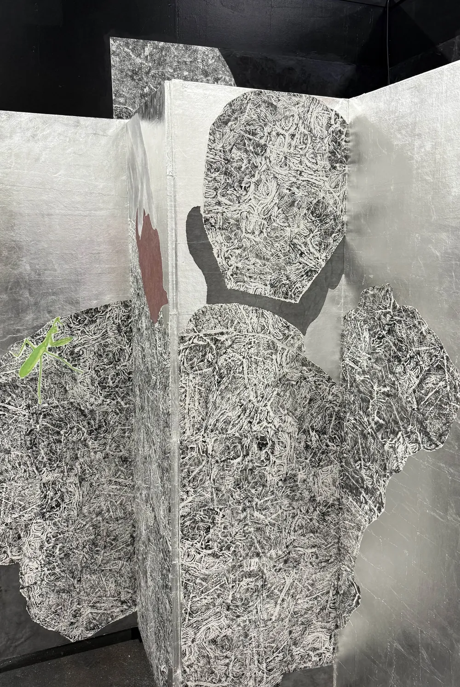
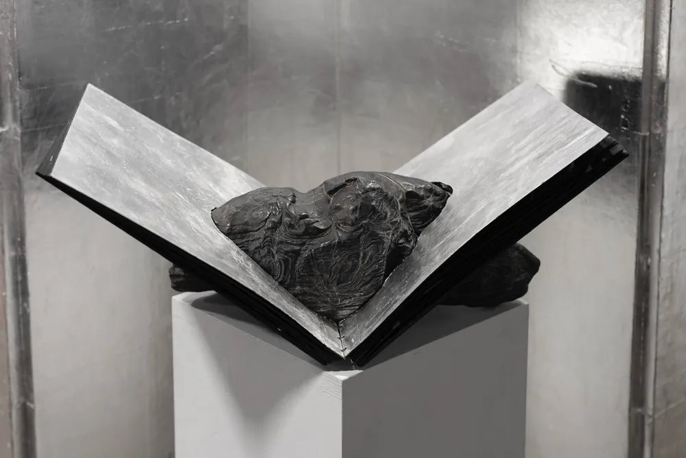

Silent Veins: Integrating Tradition with Innovation静观:传统与创新的融合
As I explore the intersection between traditional craftsmanship and contemporary expression, the scholar's stone has remained the core of my creative practice. It serves as both a source of visual and material inspiration and a meaningful reflection of my connection to family memories, cultural identity, and emotional ties. Rubbing and water-based woodcut are two fundamental techniques I have drawn from traditional arts. At the crossroads of these methods, I strive to let the materials speak, making the object a medium for expression and the subject of the narrative.在探索传统工艺与当代表达的交汇时,文人石始终是我创作实践的核心。它既是视觉与材料上的灵感来源,也深切映照着我与家族记忆、文化身份和情感纽带之间的联结。拓印与水印木刻是我从传统艺术中汲取的两种基本技法。在这两种方法的交汇处,我努力让材料自己说话,让物既成为表达的媒介,也成为叙事的主体。
Influenced by Daoist philosophy, true understanding does not always come through words, but through attentiveness to the rhythms of nature, the texture of silence, and the subtle flow of time. In the Daoist view, stones are not inert matter but manifestations of the Dao itself, formed by wind, water, and time, shaped without will, yet full of meaning. This sensibility has deeply shaped my approach to artmaking. I do not try to impose meaning onto the stone; instead, I listen for what is already there.受道家思想影响,我相信真正的理解并不总是来自言语,而是来自对自然节律、静默质地与时间细微流动的体察。在道家看来,石头并非无生命的死物,而是道本身的显现——由风、水与时间塑成,无心而成,却意蕴充盈。这种感知深刻地塑造了我的创作方式。我不试图把意义强加于石头,而是去聆听它本已具有的东西。
Read the full statement阅读全文
The title of my thesis, Silent Veins, draws inspiration from the Daoist concept of “jing guan” (静观), or “quiet observation,” a term found in the writings of Zhuangzi, one of the most influential thinkers of Daoism. In his words: “The perfected person has no self, the spiritual person no merit, the sage no name. He observes the transformations of the world in stillness, without being swayed by external things.” This idea also mirrors the traditional practice of appreciating scholar’s stones—not through forceful interpretation, but through stillness, intuition, and inward reflection.我的论文题目 Silent Veins(静观)取意于道家“静观”的观念,即“安静地观照”——这一说法见于道家最具影响力的思想家之一庄子的著述。庄子说:“至人无己,神人无功,圣人无名。”至人于静中观照世间万物的变化,不为外物所动。这一理念也与传统的赏石方式相呼应——不靠强行解读,而凭静心、直觉与内省。
In this context, “Veins” refers not only to the physical grain of stone but also to deeper layers of meaning: the veins of memory, kinship, and cultural lineage. Silent Veins thus poetically express the vitality and emotion embedded within silent materials—those that do not speak yet pulse with presence, time, and meaning.在这里,“Veins(脉)”不仅指石头的物理纹理,也指向更深层的含义:记忆之脉、亲缘之脉与文化传承之脉。因此,Silent Veins 以诗意的方式表达了蕴藏在静默材料之中的生命力与情感——它们不言不语,却随着存在、时间与意义而搏动。
From this philosophical foundation, my thesis work unfolds. The scholar’s stone, long admired for its quiet power and abstract beauty, becomes subject and method in my practice. Through rubbing—an act of attentive contact—I begin translating the silent language of stone into image. Each groove, each subtle vein impressed on paper, becomes a trace of time, memory, and emotion. These silent veins are not only geological—they are personal and cultural, linking my present hand to the ancient rhythm of craft and my own familial past.我的论文作品便从这一哲学基础上展开。文人石向来因其沉静的力量与抽象之美而为人称赏,在我的实践中,它既是题材,也是方法。拓印是一种专注的触碰;借由它,我开始把石头无声的语言转译为图像。每一道沟壑、每一缕印在纸上的细微纹脉,都成为时间、记忆与情感的痕迹。这些静默的纹脉不只属于地质——它们也是个人的、文化的,把我此刻的手与古老的工艺节律、与我自己的家族过往连在一起。
Gesture of Time explores how material changes and continues under the influence of time through stone patterns, tea stains, and the discoloration of silver leaf. Every detail bears the mark of time, making the work itself a witness to time. Through this philosophical exploration of “material and time,” I hope to convey the complex relationships between humanity and nature, culture and memory, spirit and material, and to show the endless potential and important impact of time in artistic creation.《时间的姿态》借由石纹、茶渍与银箔的变色,探索材料如何在时间的作用下变化与延续。每一处细节都带着时间的印记,使作品本身成为时间的见证。通过对“材料与时间”的哲学探索,我希望传达人与自然、文化与记忆、精神与物质之间复杂的关系,并展现时间在艺术创作中无尽的可能与重要的影响。
Where Mountains Meet is the second major piece in my exhibition. It is a large-scale collage that unfolds an imagined mountain landscape—an arena where natural forces and cultural memories converge. In this work, stone textures cascade inward like a tidal wave, sweeping from both sides toward the center, drawing the eye into a silent yet powerful axis of movement.《群山交汇处》是展览中的第二件主要作品。这是一件大型拼贴,铺展开一片想象中的山景——自然之力与文化记忆在此交汇。作品中,石的肌理如潮水般向内倾泻,从两侧涌向中心,把目光引向一条静默而有力的运动轴线。
The foundation of this landscape lies in the rubbing of stones—an ancient technique that captures more than form. Using scholar’s stones from my home in China alongside local stones from the Providence River’s banks, I collaged their textures into a continuous mountain range. Each rubbing preserves a stone’s unique pattern of veins—natural imprints shaped by time, weather, and geological force. These “veins” are not merely surface marks; they are the silent language of the stone, its way of speaking across centuries. Nature tells its story through them, and cultural memory finds tactile form.这片山景的根基在于石头的拓印——一种所捕捉的远不止形状的古老技艺。我用中国家中的文人石,以及普罗维登斯河岸边的本地石头,把它们的肌理拼贴成一道连绵的山脉。每一张拓片都保存了一块石头独有的纹脉——由时间、气候与地质之力塑造的天然印记。这些“纹脉”不只是表面的痕迹,而是石头无声的语言,是它跨越世纪说话的方式。自然借它们讲述自己的故事,文化记忆也由此获得可以触摸的形态。
Using these rubbings in my artwork, I create a space where different places and identities can connect—a mountain made of texture, where personal memories and cultural history come together. The stones become vessels of belonging, their intertwined veins reflecting the interwoven paths of my journey: from East to West, from tradition to transformation.在作品中运用这些拓片,我营造出一个让不同地方与身份得以相连的空间——一座由肌理构成的山,个人记忆与文化历史在此汇聚。石头成为归属的容器,它们交织的纹脉映照着我交错的旅程:从东方到西方,从传统到转化。
I treated the silver leaf with sulfur, which fastened the oxidation process—the silver surface transitioning from luminous brightness to a subdued, mottled gray. This material change is not simply decorative. It creates a conversation with time, showing how cultural identity develops slowly and changes over time. As the silver darkens, it mirrors how identities are layered, weathered, and reshaped over time.我用硫处理银箔,加速其氧化——银面从明亮的光泽逐渐转为沉静、斑驳的灰色。这种材料的变化并非单纯的装饰。它与时间展开对话,显示文化身份如何缓慢发展、随时间而变。银色渐暗,也映照出身份如何随着时间层层累积、经受风化、被重新塑造。
Each piece of silver leaf, each rubbed texture, contributes to a landscape that is not only seen but also felt. The work moves beyond flatness, becoming spatial and immersive. It invites the viewer to enter the image, walk among the mountains’ silent veins, and listen to what cannot be spoken. Like traditional Chinese landscape (山水) painting, this landscape does not represent a literal place. Instead, it evokes an inner geography—a space shaped by spirit, memory, and time.每一片银箔、每一处拓印的肌理,共同构成一片不只可看、也可感的山景。作品超越了平面,变得具有空间感与沉浸感。它邀请观者走进画面,行于群山静默的纹脉之间,聆听那些无法言说的东西。如同中国传统山水画,这片山景并不描绘某个真实的地点,而是唤起一种内在的地理——一个由精神、记忆与时间塑造的空间。
In Where Mountains Meet, the stone speaks not through voice but through texture. Its veins become lines of memory, echoing across time and culture, inviting each viewer to read their own reflection in its silent pulse.在《群山交汇处》中,石头不以声音说话,而以肌理说话。它的纹脉化作记忆的线条,在时间与文化之间回响,邀请每位观者在它静默的脉动中读出自己的倒影。
I consciously allow the materials to take on narrative functions in these two works. The stones are not passive objects but partners that help me tell the story and reflect on the concepts. My creation is a continuation of traditional techniques and an integrated practice that merges bodily experience, family memory, and cultural context. The concepts of “emptiness,” “fullness,” “blank space,” and “time” from Chinese culture engage with contemporary discussions on materiality and emotion. This work is an expression of personal roots and a visual experiment that crosses temporal, spatial, and geographical boundaries through materiality.在这两件作品中,我有意让材料承担叙事的功能。石头不是被动的物件,而是帮助我讲述故事、思考观念的伙伴。我的创作既是对传统技艺的延续,也是一种融合身体经验、家族记忆与文化语境的综合实践。中国文化中“虚”“实”“留白”与“时间”的观念,在此与当代关于物质性与情感的讨论相互对话。这件作品是对个人根源的表达,也是一场借由物质性跨越时间、空间与地理边界的视觉实验。
My works aim to provide a spiritual space, allowing viewers to pause, reflect, and feel, ultimately finding their emotional sound. Whether through the marks of the hand-crafted or the natural imprints of materials, these details can serve as a bridge across language and culture, evoking a renewed perception of the relationships between people and objects, time and memory, tradition and the present.我的作品希望提供一个精神空间,让观者停下来、思考、感受,最终找到属于自己的情感之声。无论是手工留下的痕迹,还是材料天然的印记,这些细节都可以成为跨越语言与文化的桥梁,唤起人们重新感知人与物、时间与记忆、传统与当下之间的关系。
Photography: Ruby Wang, Alex Wen, Oded Daniely摄影:Ruby Wang、Alex Wen、Oded Daniely

Gesture of Time时间的姿态Watch on YouTube ↗在 YouTube 观看 ↗
Process创作过程 — 22 frames帧How the ink arrives墨,如何到来
Click a frame to look closer.点击任一画面可细看。